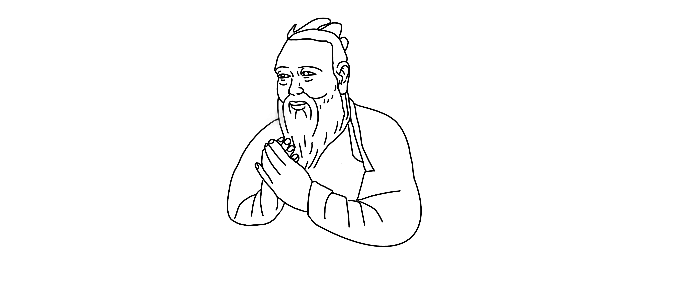
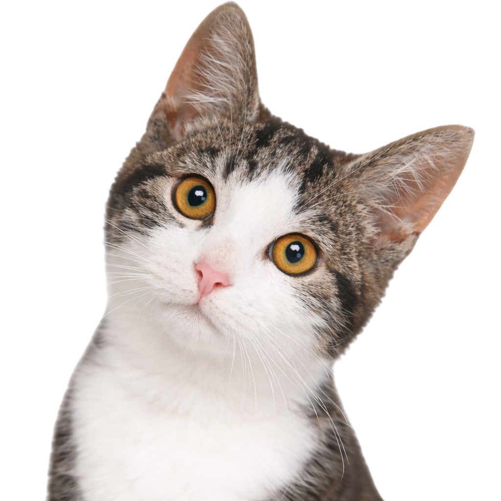
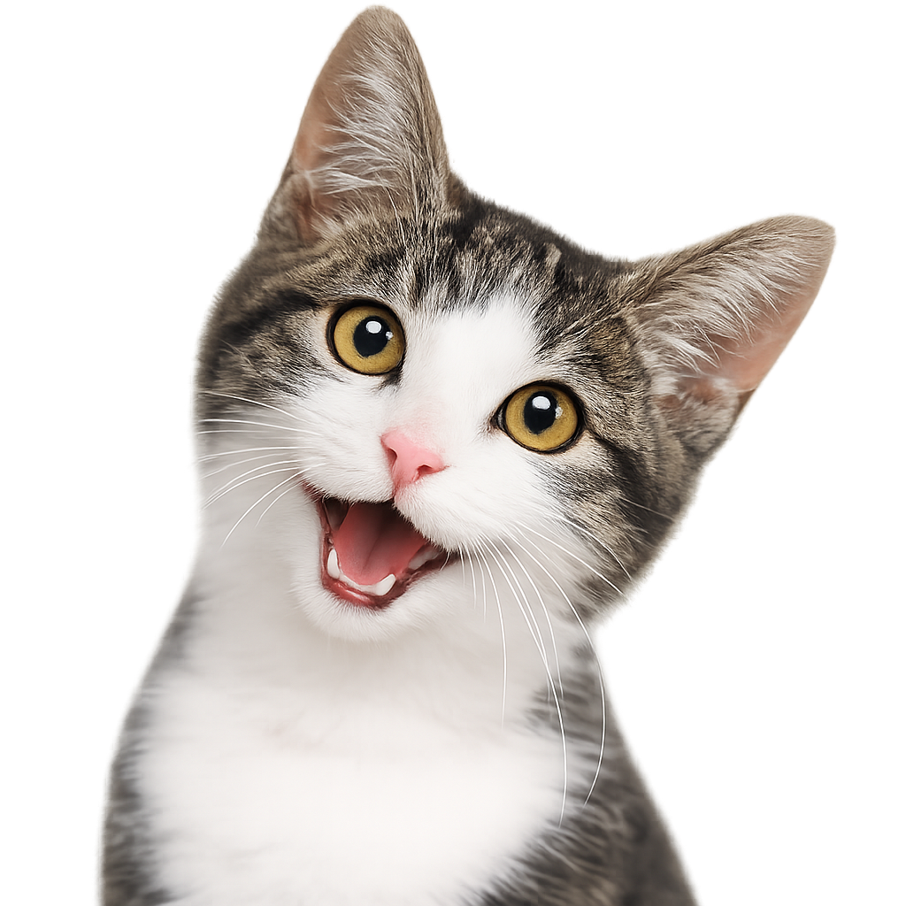
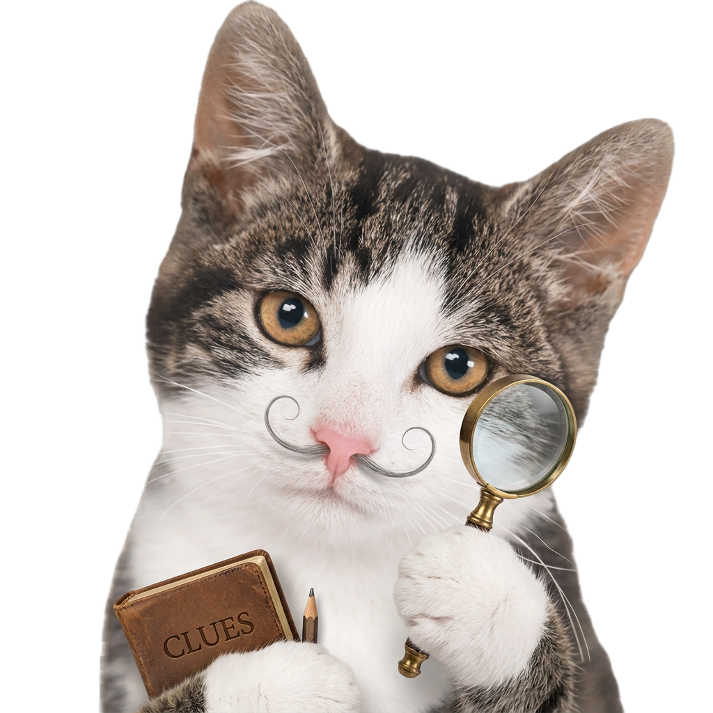
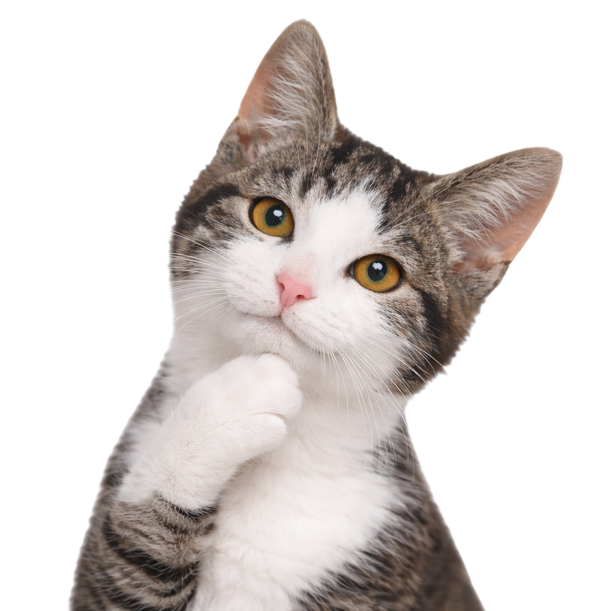

By three methods, we may learn wisdom.
First, by reflection, which is noblest
Second, by imitation, which is easiest
Third, by experience, which is the bitterest


I discovered plumeslegumes through the very fun WIMSE webring.
I really like their skeletons page's crow. There is a recurring character they have introduced for interactive dialogue. This reminds me of the NPC's in video games. What a fun, unconventional way to interact with a website!
They got their elements by ID and toggled their displays' between block and none.
I separated out the style (css) from the template (html), then used classes for references.